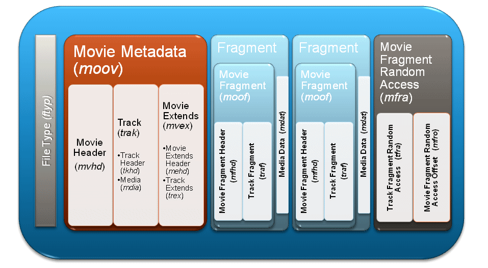

MPEG AVC File Format#
The Shown structure and values are from the currently used Project BerryMSE and contains almost the complete possible AVC File Format defined in MPEG-4 Part 15. There is still room to add, change or remove Parts of it.
More detailed Information can be found in the Public Document to Common File Format & Media Formats Specification https://www.uvcentral.com/files/CFFMediaFormat-2_1.pdf. It is a extension of the ISOBMFF and extends it by a few more Boxes, but provides good information to each Box.
Fragmented Movie Architecture:

Source: https://alexzambelli.com/blog/wp-content/uploads/smooth_slide16.png
{kind=link}
In the Project the FTYP, MOOV, MOOF and MDAT Boxes are used to send the Metadata and Media Data of the H264 Video Stream. MOOV and MOOF contain more Boxes and in this project a lot of them are implemented. Only a few Boxes are active used by us, but many are just filled with default Values. Ee don't know what impact it has to use change, remove or add Boxes. The MFRA Box isn't used in this project.
The Boxes of the AVC File Format Structure and the used sub Boxes are shown bellow. The Bytestream is displayed on the right. Not all values are fixed so some will change and the bytes are only listed as Array Index of the Variable.
FTYP Box (File Type Box)#
Defines Type of File, Version and Compatible ISO Files.
- FTYP Box (File Type Box)
- Length of Box, x = length of Box Content, 4byte, x[3] ... x[0]
- Name of Box, "ftyp", 4byte, 'f' 't' 'y' 'p'
- major brand,"isom", 4byte, 'i' 's' 'o' 'm'
- minor version, x = 0x200, 4byte, 0x00 0x00 0x02 0x00
- compatible brands, "isomiso2iso5avc1mp41", nbyte, "isomiso2iso5avc1mp41"
- Length of Box, x = length of Box Content, 4byte,
MOOV Box (Movie Box, Movie Metadata Box)#
Metadata Container for Presentation.
- MOOV Box (Movie Box)
- Length of Box, x = length of Box Content, 4byte, x[3] ... x[0]
- Name of Box, "moov", 4byte, 'm' 'o' 'o' 'v'
- MVHD Box (Movie Header Box)
- Length of Box, x = length of Box Content, 4byte, x[3] ... x[0]
- Name of Box, "mvhd", 4byte, 'm' 'v' 'h' 'd'
- version and flags, x = 0, 4byte, 0x00 0x00 0x00 0x00
- creation time, x = 0, 4byte, 0x00 0x00 0x00 0x00
- modification time, x = 0, 4byte, 0x00 0x00 0x00 0x00
- timescale, x = 1000, 4byte, 0x00 0x00 0x03 0xe8
- duration (all 1s == unknown), x = 0, 4byte, 0x00 0x00 0x00 0x00
- rate (1.0 == normal), x = 0x00010000, 4byte, 0x00 0x01 0x00 0x00
- volume (1.0 == normal), x = 0x0100, 2byte, 0x01 0x00
- reserved, x = 0, 2byte, 0x00 0x00
- reserved, x = 0, 4byte, 0x00 0x00 0x00 0x00
- reserved, x = 0, 4byte, 0x00 0x00 0x00 0x00
- matrix, x = 0x00010000, 4byte, 0x00 0x01 0x00 0x00
- matrix, x = 0, 4byte, 0x00 0x00 0x00 0x00
- matrix, x = 0, 4byte, 0x00 0x00 0x00 0x00
- matrix, x = 0, 4byte, 0x00 0x00 0x00 0x00
- matrix, x = 0x00010000, 4byte, 0x00 0x01 0x00 0x00
- matrix, x = 0, 4byte, 0x00 0x00 0x00 0x00
- matrix, x = 0, 4byte, 0x00 0x00 0x00 0x00
- matrix, x = 0, 4byte, 0x00 0x00 0x00 0x00
- matrix, x = 0x40000000, 4byte, 0x40 0x00 0x00 0x00
- pre-defined, x = 0, 4byte, 0x00 0x00 0x00 0x00
- pre-defined, x = 0, 4byte, 0x00 0x00 0x00 0x00
- pre-defined, x = 0, 4byte, 0x00 0x00 0x00 0x00
- pre-defined, x = 0, 4byte, 0x00 0x00 0x00 0x00
- pre-defined, x = 0, 4byte, 0x00 0x00 0x00 0x00
- pre-defined, x = 0, 4byte, 0x00 0x00 0x00 0x00
- next track id, x = -1, 4byte, 0xff 0xff 0xff 0xff
- Length of Box, x = length of Box Content, 4byte,
- TRAK Box (Track Box)
- Length of Box, x = length of Box Content, 4byte, x[3] ... x[0]
- Name of Box, "trak", 4byte, 't' 'r' 'a' 'k'
- TKHD Box (Track Header Box)
- Length of Box, x = length of Box Content, 4byte, x[3] ... x[0]
- Name of Box, "tkhd", 4byte, 't' 'k' 'h' 'd'
- version and flags (track enabled), x = 7, 4byte, 0x00 0x00 0x00 0x07
- creation time, x = 0, 4byte, 0x00 0x00 0x00 0x00
- modification time, x = 0, 4byte, 0x00 0x00 0x00 0x00
- track id, x = 1, 4byte, 0x00 0x00 0x00 0x01
- reserved, x = 0, 4byte, 0x00 0x00 0x00 0x00
- duration, x = 0, 4byte, 0x00 0x00 0x00 0x00
- reserved, x = 0, 4byte, 0x00 0x00 0x00 0x00
- reserved, x = 0, 4byte, 0x00 0x00 0x00 0x00
- layer, x = 0, 2byte, 0x00 0x00
- alternate group, x = 0, 2byte, 0x00 0x00
- volume (ignored for video tracks), x = 0, 2byte, 0x00 0x00
- reserved, x = 0, 2byte, 0x00 0x00
- matrix, x = 0x00010000, 4byte, 0x00 0x01 0x00 0x00
- matrix, x = 0, 4byte, 0x00 0x00 0x00 0x00
- matrix, x = 0, 4byte, 0x00 0x00 0x00 0x00
- matrix, x = 0, 4byte, 0x00 0x00 0x00 0x00
- matrix, x = 0x00010000, 4byte, 0x00 0x01 0x00 0x00
- matrix, x = 0, 4byte, 0x00 0x00 0x00 0x00
- matrix, x = 0, 4byte, 0x00 0x00 0x00 0x00
- matrix, x = 0, 4byte, 0x00 0x00 0x00 0x00
- matrix, x = 0x40000000, 4byte, 0x40 0x00 0x00 0x00
- width (fixed-point 16.16 format), x = width<<16, 4byte, x[3] ... x[0]
- height (fixed-point 16.16 format), x = height<<16, 4byte, x[3] ... x[0]
- Length of Box, x = length of Box Content, 4byte,
- MDIA Box (Media Box)
- Length of Box, x = length of Box Content, 4byte, x[3] ... x[0]
- Name of Box, "mdia", 4byte, 'm' 'd' 'i' 'a'
- MDHD Box (Media Header Box)
- Length of Box, x = length of Box Content, 4byte, x[3] ... x[0]
- Name of Box, "mdhd", 4byte, 'm' 'd' 'h' 'd'
- version and flags, x = 0, 4byte, 0x00 0x00 0x00 0x00
- creation time, x = 0, 4byte, 0x00 0x00 0x00 0x00
- modification time, x = 0, 4byte, 0x00 0x00 0x00 0x00
- timescale, x = 1000, 4byte, 0x00 0x00 0x03 0xe8
- duration, x = 0, 4byte, 0x00 0x00 0x00 0x00
- language ('und' == undefined), x = 0x55c4, 2byte, 0x55 0xc4
- pre-defined, x = 0, 2byte, 0x00 0x00
- Length of Box, x = length of Box Content, 4byte,
- HDLR Box (Handler Box)
- Length of Box, x = length of Box Content, 4byte, x[3] ... x[0]
- Name of Box, "hdlr", 4byte, 'h' 'd' 'l' 'r'
- version and flags, x = 0, 4byte, 0x00 0x00 0x00 0x00
- pre-defined, x = 0, 4byte, 0x00 0x00 0x00 0x00
- handler type, "vide", 4byte, 'v' 'i' 'd' 'e'
- reserved, x = 0, 4byte, 0x00 0x00 0x00 0x00
- reserved, x = 0, 4byte, 0x00 0x00 0x00 0x00
- reserved, x = 0, 4byte, 0x00 0x00 0x00 0x00
- name, "MicroMSE Video Handler", nbyte, "MicroMSE Video Handler"
- null-terminator, x = 0, 1byte, 0x00
- Length of Box, x = length of Box Content, 4byte,
- MINF Box (Media Information Box)
- Length of Box, x = length of Box Content, 4byte, x[3] ... x[0]
- Name of Box, "minf", 4byte, 'm' 'i' 'n' 'f'
- VMHD Box (Video Media Header Box)
- Length of Box, x = length of Box Content, 4byte, x[3] ... x[0]
- Name of Box, "vmhd", 4byte, 'v' 'm' 'h' 'd'
- version and flags, x = 1, 4byte, 0x00 0x00 0x00 0x01
- graphics mode, x = 0, 2byte, 0x00 0x00
- opcolor, x = 0, 2byte, 0x00 0x00
- opcolor, x = 0, 2byte, 0x00 0x00
- opcolor, x = 0, 2byte, 0x00 0x00
- Length of Box, x = length of Box Content, 4byte,
- DINF Box (Data Information Box)
- Length of Box, x = length of Box Content, 4byte, x[3] ... x[0]
- Name of Box, "dinf", 4byte, 'd' 'i' 'n' 'f'
- DREF Box (Data Reference Box)
- Length of Box, x = length of Box Content, 4byte, x[3] ... x[0]
- Name of Box, "dref", 4byte, 'd' 'r' 'e' 'f'
- version and flags, x = 0, 4byte, 0x00 0x00 0x00 0x00
- entry count, x = 1, 4byte, 0x00 0x00 0x00 0x01
- URL Box (URL Box)
- Length of Box, x = length of Box Content, 4byte, x[3] ... x[0]
- Name of Box, "url ", 4byte, 'u' 'r' 'l' ' '
- version and flags, x = 1, 4byte, 0x00 0x00 0x00 0x01
- Length of Box, x = length of Box Content, 4byte,
- Length of Box, x = length of Box Content, 4byte,
- Length of Box, x = length of Box Content, 4byte,
- STBL Box (Sample Table Box)
- Length of Box, x = length of Box Content, 4byte, x[3] ... x[0]
- Name of Box, "stbl", 4byte, 's' 't' 'b' 'l'
- STSD Box (Sample Description Box)
- Length of Box, x = length of Box Content, 4byte, x[3] ... x[0]
- Name of Box, "stsd", 4byte, 's' 't' 's' 'd'
- reserved, x = 0, 6byte, 0x00 0x00 0x00 0x00 0x00 0x00
- data reference index, x = 1, 2byte, 0x00 0x01
- AVC1 Box (Advanced Codec (H264) Box)
- Length of Box, x = length of Box Content, 4byte, x[3] ... x[0]
- Name of Box, "avc1", 4byte, 'a' 'v' 'c' '1'
- reserved, x = 0, 6byte, 0x00 0x00 0x00 0x00 0x00 0x00
- data reference index, x = 1, 2byte, 0x00 0x01
- pre-defined, x = 0, 2byte, 0x00 0x00
- reserved, x = 0, 2byte, 0x00 0x00
- pre-defined, x = 0, 4byte, 0x00 0x00 0x00 0x00
- pre-defined, x = 0, 4byte, 0x00 0x00 0x00 0x00
- pre-defined, x = 0, 4byte, 0x00 0x00 0x00 0x00
- width, x = width, 2byte, x[1] ... x[0]
- height, x = height, 2byte, x[1] ... x[0]
- horizontal resolution: 72 dpi, x = 0x00480000, 4byte, 0x00 0x48 0x00 0x00
- vertical resolution: 72 dpi, x = 0x00480000, 4byte, 0x00 0x48 0x00 0x00
- data size: 0, x = 0, 4byte, 0x00 0x00 0x00 0x00
- frame count: 1, x = 1, 2byte, 0x00 0x01
- compressor Length, x = 0, 32byte, 0x00 0x00 0x00 0x00 0x00 0x00 0x00 0x00 0x00 0x00 0x00 0x00 0x00 0x00 0x00 0x00 0x00 0x00 0x00 0x00 0x00 0x00 0x00 0x00 0x00 0x00 0x00 0x00 0x00 0x00 0x00 0x00
- depth, x = 0x18, 2byte, 0x00 0x18
- pre-defined, x = 0xffff, 2byte, 0xff 0xff
- AVCC Box (AVC Configuration Box)
- Length of Box, x = length of Box Content, 4byte, x[3] ... x[0]
- Name of Box, "avcC", 4byte, 'a' 'v' 'c' 'C'
- configuration version, x = 1, 1byte, 0x01
- H.264 profile (0x64 == high), x = 0x64, 1byte, 0x64
- H.264 profile compatibility, x = 0x00, 1byte, 0x00
- H.264 level (0x28 == 4.0), x = 0x28, 1byte, 0x28
- nal unit Name - 1 (upper 6 bits == 1), x = 0xff, 1byte, 0xff
- number of sps (upper 3 bits == 1), x = 0xe1, 1byte, 0xe1
- len of sps, x = lengthSPS, 2byte, x[1] ... x[0]
- sps, x = sps, nbyte, x[n] ... x[0]
- number of pps, x = 1, 1byte, 0x01</div
- len pps, x = lengthPPS, 2byte,
x[1] ... x[0]- pps, x = pps, nbyte,
x[n] ... x[0]- STSZ Box (Sample Size Box)
- Length of Box, x = length of Box Content, 4byte, x[3] ... x[0]
- Name of Box, "stsz", 4byte, 's' 't' 's' 'z'
- version and flags, x = 0, 4byte, 0x00 0x00 0x00 0x00
- sample size, x = 0, 4byte, 0x00 0x00 0x00 0x00
- sample count, x = 0, 4byte, 0x00 0x00 0x00 0x00
- STSC Box (Sample to Chunk Box)
- Length of Box, x = length of Box Content, 4byte, x[3] ... x[0]
- Name of Box, "stsc", 4byte, 's' 't' 's' 'c'
- version and flags, x = 0, 4byte, 0x00 0x00 0x00 0x00
- entry count, x = 0, 4byte, 0x00 0x00 0x00 0x00
- STTS Box (Time to Sample Box)
- Length of Box, x = length of Box Content, 4byte, x[3] ... x[0]
- Name of Box, "stts", 4byte, 's' 't' 't' 's'
- version and flags, x = 0, 4byte, 0x00 0x00 0x00 0x00
- entry count, x = 0, 4byte, 0x00 0x00 0x00 0x00
- STCO Box (Chunk Offset Box)
- Length of Box, x = length of Box Content, 4byte, x[3] ... x[0]
- Name of Box, "stco", 4byte, 's' 't' 'c' 'o'
- version and flags, x = 0, 4byte, 0x00 0x00 0x00 0x00
- entry count, x = 0, 4byte, 0x00 0x00 0x00 0x00
- MVEX Box (Movie Extends Box)
- Length of Box, x = length of Box Content, 4byte, x[3] ... x[0]
- Name of Box, "mvex", 4byte, 'm' 'v' 'e' 'x'
- MEHD Box (Movie Extends Header Box)
- Length of Box, x = length of Box Content, 4byte, x[3] ... x[0]
- Name of Box, "mehd", 4byte, 'm' 'e' 'h' 'd'
- version and flags, x = 0, 4byte, 0x00 0x00 0x00 0x00
- fragment duration, x = 0, 4byte, 0x00 0x00 0x00 0x00
- Length of Box, x = length of Box Content, 4byte,
- TREX Box (Track Extends Box)
- Length of Box, x = length of Box Content, 4byte, x[3] ... x[0]
- Name of Box, "trex", 4byte, 't' 'r' 'e' 'x'
- version and flags, x = 0, 4byte, 0x00 0x00 0x00 0x00
- track id, x = 1, 4byte, 0x00 0x00 0x00 0x01
- default sample description index, x = 1, 4byte, 0x00 0x00 0x00 0x01
- default sample duration, x = 0, 4byte, 0x00 0x00 0x00 0x00
- default sample size, x = 0, 4byte, 0x00 0x00 0x00 0x00
- default sample flags, x = 0x00010000, 4byte, 0x00 0x01 0x00 0x00
- Length of Box, x = length of Box Content, 4byte,
AVC1 and AVCC Box#
The most Important Boxes of the MOOV for the H264 Streaming are the AVC1 and AVCC Box. They contain needed Information for the Decoder, which settings/parameter are used.
This Includes Profile, Constraints, Level, SPS and PPS.
More info to this can be found in H.264.MOOF Box (Movie Fragment Box)#
The MOOF Box holds the information to a Movie Fragment, which is in the following MDAT Object.
- MOOF Box (Movie Fragment Box)
- Length of Box, x = length of Box Content, 4byte, x[3] ... x[0]
- Name of Box, "moof", 4byte, 'm' 'o' 'o' 'f'
- MFHD Box (Movie Fragment Header Box)
- Length of Box, x = length of Box Content, 4byte, x[3] ... x[0]
- Name of Box, "mfhd", 4byte, 'm' 'f' 'h' 'd'
- version and flags, x = 0, 4byte, 0x00 0x00 0x00 0x00
- sequence number, x = sequence, 4byte, x[3] ... x[0]
- Length of Box, x = length of Box Content, 4byte,
- TRAF Box (Track Fragment Box)
- Length of Box, x = length of Box Content, 4byte, x[3] ... x[0]
- Name of Box, "traf", 4byte, 't' 'r' 'a' 'f'
- TFHD Box (Track Fragment Header Box)
- Length of Box, x = length of Box Content, 4byte, x[3] ... x[0]
- Name of Box, "tfhd", 4byte, 't' 'f' 'h' 'd'
- version and flags, x = 0x020020, 4byte, 0x00 0x02 0x00 0x20
- track ID, x = 1, 4byte, 0x00 0x00 0x00 0x01
- default sample flags, x = 0x01010000, 4byte, 0x01 0x01 0x00 0x00
- Length of Box, x = length of Box Content, 4byte,
- TFDT Box (Track Fragment Base Media Decode Time Box)
- Length of Box, x = length of Box Content, 4byte, x[3] ... x[0]
- Name of Box, "tfdt", 4byte, 't' 'f' 'd' 't'
- version and flags, x = 0x01000000, 4byte, 0x01 0x00 0x00 0x00
- base media decode time, x = 330*sequence, 8byte, x[7] ... x[0]
- Length of Box, x = length of Box Content, 4byte,
- TRUN Box (Track Fragment Run Box)
- Length of Box, x = length of Box Content, 4byte, x[3] ... x[0]
- Name of Box, "trun", 4byte, 't' 'r' 'u' 'n'
- version and flags, x = 0x00000305, 4byte, 0x00 0x00 0x01 0x31
- sample count, x = 1, 4byte, 0x00 0x00 0x00 0x01
- data offset, x = 0x70, 4byte, 0x00 0x00 0x00 0x70
- first sample flags (i-frame or not), x = 0x02000000 or x = 0x01010000 , 4byte, 0x20 0x00 0x00 0x00 or 0x01 0x01 0x00 0x00
- sample duration, x = 330, 4byte, 0x00 0x00 0x01 0x4a
- sample size, x = 4+lengthData, 4byte, x[3] ... x[0]
- Length of Box, x = length of Box Content, 4byte,
- Length of Box, x = length of Box Content, 4byte,
- Length of Box, x = length of Box Content, 4byte,
MDAT Box (Media Data Box)#
The Media Box holds an Media Sample. In this Project this is a NAL Unit.
- MDAT Box (Media Data Box)
- Length of Box, x = length of Box Content, 4byte, x[3] ... x[0]
- Name of Box, "mdat", 4byte, 'm' 'd' 'a' 't'
- data length, x = lengthData, 4byte, x[3] ... x[0]
- data, x = data, nbyte, x[0] ... x[n]
- Length of Box, x = length of Box Content, 4byte,
- len pps, x = lengthPPS, 2byte,
- Length of Box, x = length of Box Content, 4byte,
- Length of Box, x = length of Box Content, 4byte,
- Length of Box, x = length of Box Content, 4byte,
- Length of Box, x = length of Box Content, 4byte,
- Length of Box, x = length of Box Content, 4byte,
- Length of Box, x = length of Box Content, 4byte,
- Length of Box, x = length of Box Content, 4byte,
- Length of Box, x = length of Box Content, 4byte,